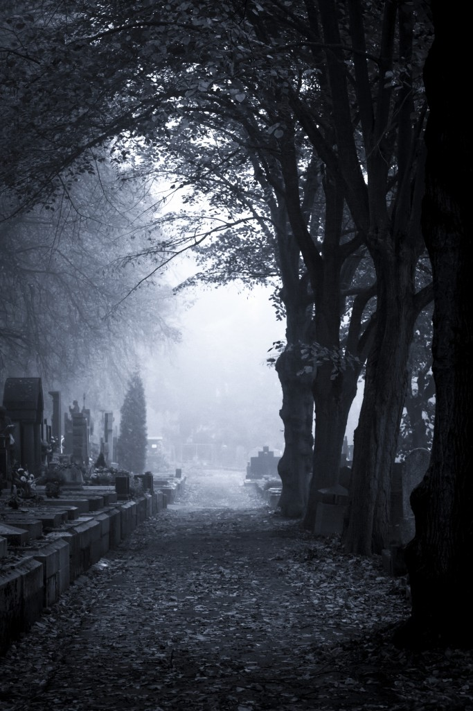

1.0 The western fear of dying
Let’s face the fact: we are all going to die. This is the one ultimate truth of life, still somehow we seem to find it a scary one. The fear of death is encompassing and universal, yet western civilisation has found a dark cultural response to it. Namely, in western culture we have found a multitude of ways to deal with death anxiety, and it is even seen to be at the core of all human endeavours. All societal structures from politics, to protests, from education to healthcare, and even from sexism to racism have been rooted in the fact that we as a species want to protect ourselves from the evil that is death (Ernest Becker, 1973). Through the creation of meaning we preserve the notion that life is something worth holding on to. Western societies have been indoctrinated by materialism and individualism to think that their life is their possession. Scimecca phrases it in the perfect way:
Scimecca, J. A. (1979). Cultural hero systems and religious beliefs: The ideal-real social science of Ernest Becker. Review of Religious Research 21:62-70.
Because all individuals instinctively fear their own annihilation, death confers a narcissistic need to preserve the individual’s self-esteem in the face of the pointlessness of life. What humankind fears most is not extinction, but “extinction without meaning”
Becker suggests that there is a societal need to create a “cultural hero system”. In this system humans create and perpetuate the myth that human life has any significance, and particularly that of their own. Through ‘contributions’ to the world, the human wishes to become a heroic figure but actually is nurturing narcissistic tendencies to improve their self-esteem, and consequently to forget their mortality. These heroic projects shift focus from the meaning of life to giving life individual meaning and purpose. Through the perpetual repetition of narcissism, culture has transcended nature and even opposes it. Culture provides the platform for symbolic individualistic/narcissistic immortality; leaving something important behind that is yours and which will make you be remembered for eternity.
In modernity, death recedes further and further from day-to-day human experience. Humans are no longer constantly faced with death, and when they do confront death, it is usually presented in a sanitized form, with the sting of its horror far removed from everyday reality. We witness death through the mass media, but in heavily filtered fashion.
Moore, C. C., & Williamson, J. B. (2003). The universal fear of death and the cultural response. Handbook of death and dying, 1, 3-13.
Here we find the creation of a ‘shifting baseline syndrome’ (Soga & Gaston, 2018) when it comes to understanding the true core of death and the things that come with it. New generations accept the situation in which we deal with death, and how we visualize it, in the way in which they were raised to accept as being normal. I believe that there should be a kind of shift that takes place where instead of villinising death in everyday western life, we change our attitude towards a curious and studious one. We could palliate the western concept of death through reiteration of a death positive narrative. Becoming more death positive will have a positive influence on our lives. Believing in the flux of life that doesn’t only encompass the living part but also the death part. Keisha scarville phrased it as:
“A catalyst to transformation. It is a process that can be incredibly difficult and mournful, but also it can create spaces that are celebratory and contemplative.”
(quoted in: Kramer, 2020)
As Kramer suggests, embracing and re-visualising death as something natural and beautiful could diminish fear, anxiety and most of all reshape our way of living to a more positive, curious and free one.
In this thesis I wish to revisit the visualisations and the connotations made in the western society surrounding death, to consequently understand the fear and then provide a death positive solution for the future. As in death positivity we find a more curious and creative mind.
I am curious to find out how other people think about death, and want to conceptualise a world where there is no stigma surrounding death. Living in current times, where we are dealing with a global pandemic, we have to deal with the fact that death is an ever glooming presence in our lives, and fear of it has been more apparent than ever. People are acting out in strange ways, and even try to deny the reality. In a time like this I believe de-stigmatization of death would help immensely, and I hope this thesis can bring tranquility in a time of chaos, to everyone that reads it. For what I know now, we in the western society know death as a dark and existential moment we are all heading towards. This paper seeks to answer the following: Can we revisualise the dark and existential connotation of death to a brighter and positive one within western society?
1.1 My fear
Let’s start at the birth of this thesis: my fear of dying. Ever since I was young, I have been immensely afraid of dying. I remember lying awake at night contemplating my dooming, existential, thoughts. I would run downstairs every night asking my mom why we have to die, and asking her existential questions such as “But if there is nothing after we die, where will I go? What will happen to me?”. I imagined a black hole, that would suck me into nothingness. My mom always tried to calm these thoughts, but nothingness, emptiness and darkness have remained the main visuals I link to death.
This fear of nothingness has subconsciously been a pillar on which I base my life, and has shaped me to be who I am today. Having this ever present feeling in the back of my mind that my life will end, influences a lot of my behaviors, feelings and opinions. I am always a slight sceptic and I am not religious. Someone who seeks love, yet also knows how the fragility of it makes me vulnerable. I guess overall someone who loves continuity, and tries to avoid anything that makes me feel exposed. I sometimes feel like I live in a bubble that could pop at any moment. I work really hard to keep the bubble whole by surrounding myself with friends and family, love and happiness, food and Netflix; all great distractions. However, lately (especially) I have had the feeling that it might be time to pop the bubble. Seeking discomfort could bring me to acceptance and maybe also make me fearless in a way. So in this thesis, I hope to do just that. Pop that bubble, or rather reshape that bubble.
Why exactly am I afraid of dying then? I touched upon it slightly above, but I thought I’d explain it a bit more thoroughly. I guess one could call me an oudenophobic, as I believe in nothingness after death. I believe that my being, knowledge and perception all cease to exist upon my death. This staggering thought scares me. I don’t understand how there can be nothing, yet I believe that to be true. I see it as this sort of black hole in the universe - where at the moment of reaching it I am suddenly sucked into darkness and out of existence. Eternal nothingness. This in turn then makes me question the significance of life, leading to increased anxiety from the feeling that I need to make my life significant in one way or another; by finding a form of immortality. I believe I can achieve this immortality mainly through achieving greatness. This in turn gives me a life of continuously chasing, rather than living. The aforementioned explains why I obsessively plan my future, try to overachieve on anything I do (and if I know I can’t try to avoid it by all means), obsessively try and live a “healthy” lifestyle, have hyperventilation attacks,
ocd and live a life where anxiety takes over control more times than I would like to admit. I found a quote of Enest Becker explaining this in the best way:
“Modern man is drinking and drugging himself out of awareness, or he spends his time shopping, which is the same thing.”
(Becker, 1973)
I also do anything to make myself feel better such as exhibiting shopaholic type of behaviors, cuddling obsessively and avoidance of any negative inputs such as the news (although this is something I mostly did when I was younger). However now I see that due to covid, or lets be honest, 2020, I have started to revisit these old behaviors again, as it is only negative these days. I even catch myself resulting in peter-pan-like behaviors. Never growing up entails never having to die.
1.2 Why do we fear it?
So why are we afraid of death? When asking a couple of people this, I realized how deeply rooted this westernized notion of death actually is. Death is a taboo that they prefer to avoid. This was even reflected when I confronted people with this research topic. The most common reactions were of surprise, annoyance and defensive behavior. Nevertheless, after the reluctance to engage most people indulged me by participating in a debate, which mostly ended in a sense of calmness on both ends. We felt connected, soothed even. This made me realise the significance of understanding the root of death anxiety even more.
Thinking and speaking about it more regularly, and changing its discourse when thought/spoken about is important. Especially in a time like this, where the world is basically giving us a “bitch slap” in our face with the name: “Memento Mori, Sincerely Corona”, it is of root prominence. Creating a visual narrative that is positive can therefore create an enormous difference.
In order to embrace the problem, one must understand the root of the problem and where it began. My thoughts about death and the fear of it actually started at a really young age. I have one vivid memory that comes to mind when I think about my younger self being afraid of dying. I always used to have extremely animated dreams. I remember being around 7 or 8 years old, constantly having the same nightmare; for quite a long period this nightmare would repeat itself on a weekly basis. The dream was me, behind a rock under the sea, standing still. Every time I tried to move around or look around the corner of the rock there was a huge shark waiting for me. Waiting for the moment he could pounce and kill me; And that was it, the entire dream. It used to take what it seemed like an eternity of me just standing there, sometimes looking around the corner, but mostly terrified to the bone of making any sudden movements that could result in my gruesome death. It always ended with me being caught by the shark and killed (and consequently startling myself awake). Until now I didn’t give the dream too much thought and I did not think it left any impact on my life. However, throughout my research I questioned the insignificance I placed upon that dream I wanted to understand whether the awareness of death was in any way related to it. Therefore, I did some research in its meaning and found the following:
“Dreaming of sharks can mean that you feel there is an immediate threat close to you. In this case, sharks represent a powerful enemy or obstacle that has you frozen in fear.”
(Tamsin, 2013)
Combining this knowledge with the fact that around this period of my life, I would never go to bed without asking my mom hundreds of questions about my finite existence, suddenly made sense. I guess this dream was me processing my awareness, thus my fear of death
in my dreams.
It is interesting to see that even at such a young age, I was already dealing with the dissolution of life. Research has shown that these night terrors and nightmares, as one could call them, are distinct indications of a child’s emerging knowledge of vulnerability and death. (Solomon, Greenberg, & Pyszczynski, 2015) Evidence suggests that children as young as three years old are aware of the possibility of death, and feel discomfort when thinking about it (Antony, 1972). As soon as children become aware of the concept, another thought creeps into their minds: if death is an option, then my death is too. I could also suddenly cease to exist! Not surprisingly, this is also the age we start to engage in primitive methods of terror-management (Solomon, Greenberg, & Pyszczynski, 2015), which we will later in life rely on almost on a day to day basis. The most simple example of this is seeking comfort in situations of stress, by reaching out to our parents/caregivers; as they were, in most cases, the earliest form of comforting security in our lives (Harlow, 1958). Later on in life we replace this with other terror-managing techniques stemming from our culture and
our surroundings, that I will later discuss.
1.2.1 The Awareness
To fear something, one must be aware of it. To therefore fully comprehend the fear, we must acknowledge the awareness of it. I already mentioned that we come to awareness of death quite early in our lives (Anthony, 1972; Monk & Lapouse, 1959; Brown, 1990). It turns out that children are much more concerned with the thought of dying then most of us are aware of (Yalom, 1980; Piaget, 1959). Consequently, when this realisation comes children will start to employ techniques - consisting of cultural related behavioral and mental expressions - to deal with this creeping reality and deny its existence partially or completely. (Solomon, Greenberg, & Pyszczynski, 2015; DeWall & Baumeister, 2007)
So where does this awareness come from? Do all animals on this earth know that they will eventually die? The plain and simple answer to that question is no, and we have evolution to thank for it. Unfortunately, with the benefits evolution gave humanity, we also received the negative aspects of human intelligence such as the awareness of death and of one’s self (Duval & Wicklund, 1972; Carver, 2012; Harari, 2014) . As of yet, it seems that us humans are the only beings conscious of our own existence in time and space (Brown, 1990). We are capable of pondering about death and often have trouble with understanding that we are as Otto Rank phrased it: “a temporal representative of the cosmic primal force” (Otto Rank - 13). The cosmic joke that is ‘awareness’ almost feels like we are living in an episode of The Truman-Show or in the Matrix, with no control. The only thing that we can do is come to terms with this awareness. Knowledge is power, yet it's all about how you deal with that knowledge. In western society we tend to avoid acceptance, and ponder about ways to block out the thoughts of our mortality. When we ignore it, death doen't actually exist.
I think this phenomenon is beautifully phrased in a poem by W.H. Auden and C. Isherwood :
Happy the hare at morning, for she cannot read
The Hunter s waking thoughts, lucky the leaf
Unable to predict the fall, lucky indeed
The rampant suffering suffocating jelly
Burgeoning in pools, lapping the grits of the desert,
But what shall man do, who can whistle tunes by heart,
Knows to the bar when death shall cut him short like the cry of the shearwater,
What can he do but defend himself from his knowledge?
(Auden & Isherwood, 1936)
1.2.2 The Denial
It was previously mentioned that if awareness of our finite lives feels like one big joke, denial is a reaction that results from it. From hearing my mom say when I was younger to stop thinking about it, to Nietzche considering thoughts of life to be more desirable (Nietzsche,1977), everyone’s initial reaction seems to be denial. Anthropologist Ernist Becker wrote about the concept on his deathbed, finding it the perfect time to try and grasp why we employ denial of it in our daily lives (Becker, 1973). Becker comes to realise through his extensive psychoanalysis that man’s life is lived by lying to himself about himself. The essence of life seems to revolve around the fact that we are in grave denial of our terminable existence. He continues on by saying that man can deal with the constitutional agony of his being, through acts of heroism and thoughts of there being an otherworldly existence; whether that is god, a soul or anything else mythical / magical / supernatural / non-somatic / phenomenal / miraculous or unreal. Man,
as Becker describes it:
“has no doubts; there is nothing you can say to sway him, to give him hope or trust. He is a miserable animal whose body decays, who will die, who will pass into dust and oblivion, disappear not only forever in this world but in all possible dimensions of the universe, whose life serves no conceivable purpose, who may as well not have been born.”
(Becker, 1973).
Therefore, anyone that lives without denial or faith, as camus puts it in ‘The Fall’, will be alone, and experience the dreadful weight of its days on earth more intensely. (Camus, the fall, 1956)
Essentially, what it comes down to is to deal with it by sedation or as Kierkegaard called it “tranquilizing with triviality” (Watkin, 1990). Desentizing oneself by living our lives as if the banalities of it are of utmost importance; having the best shoes - resulting in an incredulous e-commerce flux during covid-19 - winning first place at a race, getting laid, making sure you are extremely fit etc. Acts like all of these things actually matter, and makes you live your life in full denial. This has been the western philosophical perspective on how we should deal with the concept of death, and it is ever present in our fast paced lives of consumerism and individualism. No wonder we see it as a dreadful looming existence rather than an approaching natural beauty. In order to shift from an avoidance to an embrace, we need to alter the visualized fear into a palliated understanding.
1.2.3 The Visualization of Fear
In the field of psychology fear is defined as follows:
A basic, intense emotion aroused by the detection of imminent threat, involving an immediate alarm reaction that mobilizes the organism by triggering a set of physiological changes. These include rapid heartbeat, redirection of blood flow away from the periphery toward the gut, tensing of the muscles, and a general mobilization of the organism to take action.
(APA, 2020)
This definition is particularly interesting, as fear initially seems to be a mechanism to deal with threats upon our lives. However, we still feel fear even if there are not any direct threats nearby. Why is this? Well, this seems to be another thing we can thank human evolution for: irrational fear (Harari, 2014). A lot of animals in this world experience fear, and it is not a foreign emotion to them. However, no animal’s neocortex is that advanced, so that they can experience the fear of something even when that something is not around to fear it. In other words, we are the only ones capable of fear in absence of menace (Solomon, Greenberg, & Pyszczynski, 2015; Kingdon,2003; Diamond, 1992; Mithen, 1996). This makes it particularly hard to grasp why we experience intense fear surrounding death, seeing as it is just a compilation of wild ideas that come together as one big threat. These imaginary scenarios are all speculations and differ per person, due to the differences in societal, cultural, and environmental
upbringing.
1.3 How is it visualized?
To understand the westernized perceived notion of death and the thereafter, we must analyse its western visualizations. Death as a concept is actually quite an ungraspable thing. We can’t truly see it, feel it, taste it, hear it or smell it. We may have seen a dead person, experienced a near death experience, heard someone in their final moments, or smelled a dead body once before, yet experiencing these things don’t result in the true definition of what it actually means to die. The biological definition of the concept death is:
“the permanent ending of vital processes in a cell or tissue” (Merriam-Webster, 2020)
.
However logical this concept might be, it seems to be too literal for a lot of people to just accept. In order to relate more to the concept, and to consequently understand it better people have resulted in expressions of visualisation of death (Solomon, Greenberg, & Pyszczynski, 2015). Circumventing the concept of death becomes a lot easier when having a visual picture.
1.3.1 The Darkness of Death


The Darkness of death has been an apparent theme in western visualizations. Skulls, scythes, coffins, tombes, ravens and a gloomy mist are just a couple of the things that have been used to imagine it. Essentially these are all quite creepy symbols with a glooming ambience. There are a multitude of these dark fabrications, but I will touch upon the main one to prove the indoctrinated darkness.
There is one example in particular that comes to mind when considering death, which is rooted in a dark sentiment: the personification called the Grim Reaper. The Grim Reaper is a skeletal like figure, mostly hooded in a dark or black robe, carrying around a scythe (Mckenna, 2004). The Reaper seems to have originated in Europe around the 14th century; right around the time when Europe was dealing with, ironically, the black death. Around this time, the plague took about one third of Europe’s people, and western civilization suffered a great loss (Mckenna, 2004; The New Yorker [video], 2001). It is understandable that Europeans were trying to put a picture to this tragedy.
However, why did they then visualize specifically this dark creature that is the Grim Reaper? Furthermore, why are all of the ominous elements such as the scythe, the robe and the skeleton used to visualize it? The adoption of the skeleton came from the depiction of death as a decayed form of life. It literally represents the dissolution, or even downfall of the human (Mckenna, 2004; The New Yorker [video], 2001). The robe is believed to be inspired by the clothing of the religious characters that directed the burials, and the scythe is inspired by the tools farmers used at the time. With these scythes they literally reap the world of people, like the harvesters did the akers of crops.
(The New Yorker [video], 2001; Mckenna, 2004).
The personifications of death made me wonder why we need to personify it in the first place. After interviewing people about what they see when they envision death, a lot of the times the answers were relating to a human-like-character. Characters of death have ranged from “Meiger Hein/the grim reaper”, la calavera catrina, the king of the graveyard, Pesta, Giltinė, King Yama or Yan, or even The Angel of Death. Giving death a human form, makes death someone that could essentially be reasoned with, someone that you could bargain with, someone who could be tricked, overwhelmed and even intervened with (Solomon, Greenberg, & Pyszczynski, 2015; Becker,1973) . This is a concept that I find quite intriguing; every culture/society has a slightly different visualisation of death, because it has other norms/values that are part of this personification of death. Western societal personifications particularly have been rooted in darkness, yet examples like la Calavera Caterina give us a more elated visualisation. This made me think that it might be interesting to suggest a new, “overarching/general” personification of death that has its roots in positivity that can aid in palliating the concept of death.
Communication is therefore a tool which could make it more graspable.
1.3.2 The pornography of death
When we then look at the representation of death in the media, we find that it has a certain sensationalist aspect to it. People are either completely clouded from it or confronted with gory ‘Quentin Terrentino’ explosions of blood
and kills.
Death has become desensitized from its original, true form, as part of nature. In the pornography of death Geoffrey Gorer (1955) claims that the way death is visualized in our daily lives results in some sort of social prudery, which prevents its core truth to be apparent in our society. Hindering representations cause for violent visualisations or deceptive knowledge surrounding the topic of death. Gorer links these gory, morbid intensities to the way in which sex is portrayed in pornography: hyperbolic and extreme. If we all believe that raping a woman, and expecting her to like it, is a normalized concept then we start to believe that the absurdity is normality (Gorer, 1955). We are no longer connected to the implications of death on our lives, and have misshapen aggressive thoughts, or completely ignore its reality. We need to reshape the ritualistic nature of knowledge distribution through media about death, and reclaim it by palliating its definition. Sharing a natural
and true image of death conditions us to have a healthy relationship with it.
1.3.3 The loneliness of death
Death has been depicted as a problem of the living. When death crosses our minds we think of the loneliness surrounding it. Instead of celebrating a life, those who remain are often left with sorrow and a gaping feeling of emptiness. (Elias, 1985)
A great example of a visualisation of this emptiness is the generalized depiction of a cemetery: eerie and empty. If you ever have been to a graveyard you have probably felt a sense of creepy serenity. Feelings of being uneasy and lonely would creep over you, as you saw or roamed their grounds. Cemeteries give you a feeling of the finity of life, and are often linked to the goodbye’s rather than exclaiming celebrations. The cemeteries are often very solemn and silent, considering people see this as the way they need to pay tribute to their deceased. For them, this represents the mysterious lonely mortality. (Burrial Planning, 2016).

On top of the visual representations of loneliness linked to death, there is also a direct link becoming lonely after the death of a loved one. There is a bidirectional correlation between dying and loneliness; once people become lonelier, death rates also go up. (Steptoe, Shankar, Demakakos & Wardle, 2013) What if we could shift this thought pattern of isolation to a more colorful and tranquil one? Becoming more death positive could therefore not only ameliorate the mental state of the ones left behind, yet it also decreases the susceptibility to it. (Stroebe, W., Abakoumkin, G. & Stroebe, M., 2010). In other words, if we were to alter the perception of death itself, we could tackle the impact death leaves behind upon individuals. Yet, in order to do so, one must consider the way in which western society deals with death.
1.4 How do we currently deal with it, in western social structure?
By now, it should have become clear that there needs to be a structural change of the concept of death in western society. This means we need to find new ways to deal or rather embrace the concept. Before we can touch upon what those types of changes could look like, it is important to quickly reflect upon the ways we currently deal with the anxiety surrounding death.
1.4.1 Immortality
The main way to deal with the ever glooming concept of death, apart from Terror Management Therapy (TNT) 1
(Solomon, Greenberg, & Pyszczynski, 2015), is the immortalisation their lives. Whether you are a suicide bomber or someone who’s written a critically acclaimed novel, either way you are creating an everlasting impact on this world, and this in essence is the meaning of life - or at least the meaning people try to give to their lives once they realise there is no meaning — denial, denial, denial.
1 (Solomon, Greenberg, & Pyszczynski, 2015) Terror management therapy is a therapy which mostly deals with the two concepts confidence and compliance to cultural/societal/environmental beliefs
This obsession with immortalization is a tale that is as old as time. In the first known written story, inscribed on the ancient Sumerian tablets also known as ‘The Epic of Gilgamesh’, is a story about a consuming passion for immortality stemming from an immense fear of dying. One of the infamous quotes of the story, from the former Urukian King, is about the realisation
of death:
“How can I rest, how can I be at peace? Despair is in my heart. What my brother is now, that shall I be when I am dead.” (Sandars, 1972 - Gilgamesh)
This realisation results in an obsession to try and avoid it in any way he can. How can this however be brought into realisation? One thing is certain, staying awake for 7 nights is not the way to go. (Sandars, 1972 - Gilgamesh) To find a plain and simple answer to the question, we must essentially just deny the inevitability of death: either literally or symbolically/spiritually.
1.4.1.1 Literal
Literal aspirations towards immortality promise the implausality of physical death. In other words, we don’t physically die. Years and years of research has been done into finding the right medicine, diet or lifestyle that could elongate and possibly eternalise our lives (O’connell, 2017). From consuming gold, to eating fruits from the Jambu tree to swimming in a magical well; there have been numerous attempts at literal immortality of the physical being. Alchemy played a big role in this exploration as well, which now in turn has evolved into science and will probably result in us all ending up being machines (O’connell, 2017). Technology has brought us robotic limbs, social media obsessions and literal heads and bodies on ice that show the direction we are going in. This reminds me of an episode in Black Mirror where you could download all the social media output of one of your loved ones into a physical copy of them after they die (Black Mirror S2E1, 2013). Is this a digitized remnant of a former human persona,
and thus a good foundation on which we can build our immortality? Or are the images we share and portray online only the way we want to be immortalised, and is this therefore the reason why our current society is so obsessed with it?
* SIDE NOTE
These aspirations have been at the forefront of modern technology and innovation. Without this need to survive, Nobel Prize winner Dr. Alexis Carrel may never have invented the technique to suture blood vessels, which made organ transplants possible. He believed “La sénescence et la mort sont un phénomène contingent et non nécessaire” (Solomon, Greenberg, & Pyszczynski, 2015) meaning that old age and death are a non necessary and fluky phenomenon. With him are hundreds and thousands more who followed in inventions for elongations of life. So maybe we still need the fear of death a little, because without it there would be no will-power? No motivation? Or there needs to be a palliation of the concept not a complete sensorization.
1.4.1.2 Symbolical/Spiritual
The quest for literal immortality definitely helps conquer the fear to some extent, yet people also long to be a part of something that stands the wits of time. Something that is an extension of themselves, and eternal. They like to persist and this does not have to be physical. This can happen through family, fame, fortune, nationalism, heroism etc. This is why people focus so much of their lives around these concepts (Lifton, 1979) . Is to be free from fear then to be free or to engage in all of these societal concepts of symbolic immortality? To put it simply, the answer to this question is no. The obsession to extend one’s life is one that can become an unhealthy prison, as compulsions to make this happen can become an overpowering. Everything you do is now directed towards achieving this immortality, even through extending the life of the soul (Rank, 1997; Descartes, 1641). If one doesn’t achieve their goals directed towards this elongation, one can feel more anxious and even depressed. This can be seen for example in the current rise in anxiety and depression amongst youngsters (Vernon, 2015). Through mediatization of society and the rise of importance of social media, the younger generations can see the never ending possibilities of life.
This puts an unhealthy pressure in their minds, instead of a healthy alleviation of worry.
Looking at immortality now in general, we can conclude that it is not the best solution to the anxiety surrounding death and even is a form of essential villinisation. I propose a visual shift to condition a new way of seeing. (Rescorla, 1988)